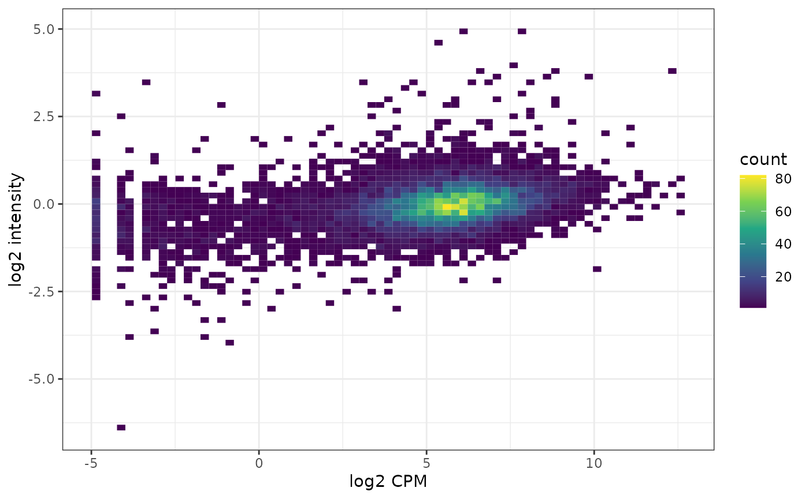
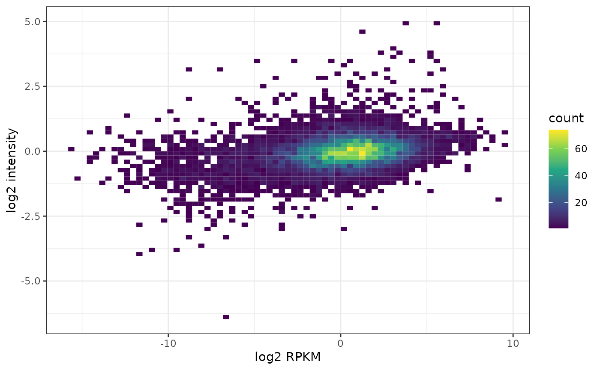
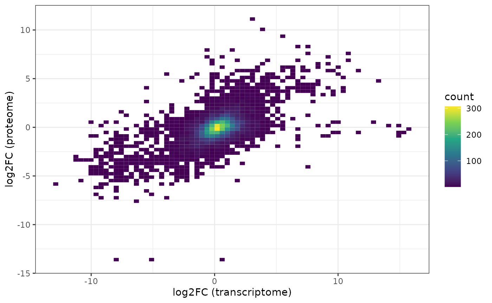

TranscriptomeProteome.RmdGet CCLE transcriptome data for HCT116:
atlasRes <- ExpressionAtlas::searchAtlasExperiments(
properties = "Cancer Cell Line Encyclopedia",
species = "human" )## Searching for Expression Atlas experiments matching your query ...## Query successful.## No results found. Cannot continue.
atlasRes## NULL
ccle.trans <- ExpressionAtlas::getAtlasExperiment("E-MTAB-2770")## Downloading Expression Atlas experiment summary from:
## ftp://ftp.ebi.ac.uk/pub/databases/microarray/data/atlas/experiments/E-MTAB-2770/E-MTAB-2770-atlasExperimentSummary.Rdata## Successfully downloaded experiment summary object for E-MTAB-2770
ccle.trans <- ccle.trans[[1]]
ccle.trans <- ccle.trans[,grep("HCT 116", ccle.trans$cell_line)]
ccle.trans## class: RangedSummarizedExperiment
## dim: 58735 0
## metadata(4): pipeline filtering mapping quantification
## assays(1): counts
## rownames(58735): ENSG00000000003 ENSG00000000005 ... ENSG00000285993
## ENSG00000285994
## rowData names(0):
## colnames(0):
## colData names(4): AtlasAssayGroup organism cell_line diseaseThere is currently an issue with obtaining E-MTAB-2770 via the ExpressionAtlas package. We therefore pull the file directly from ftp as a workaround.
ebi.ftp.url <- "ftp.ebi.ac.uk/pub/databases/microarray/data/atlas/experiments"
mtab.url <- "E-MTAB-2770/archive/E-MTAB-2770-atlasExperimentSummary.Rdata.1"
mtab.url <- file.path(ebi.ftp.url, mtab.url)
download.file(mtab.url, "E-MTAB-2770.Rdata")
load("E-MTAB-2770.Rdata")
ccle.trans <- experimentSummary
file.remove("E-MTAB-2770.Rdata")## Using cached version from 2022-12-07 01:32:10We proceed as before:
ccle.trans <- ccle.trans[[1]]
ccle.trans <- ccle.trans[,grep("HCT 116", ccle.trans$cell_line)]
ccle.trans## class: RangedSummarizedExperiment
## dim: 58735 1
## metadata(4): pipeline filtering mapping quantification
## assays(1): counts
## rownames(58735): ENSG00000000003 ENSG00000000005 ... ENSG00000285993
## ENSG00000285994
## rowData names(0):
## colnames(1): SRR8615282
## colData names(5): AtlasAssayGroup organism cell_line disease
## organism_partGet the CCLE proteome data for HCT116:
eh <- ExperimentHub::ExperimentHub()## snapshotDate(): 2022-10-31## ExperimentHub with 1 record
## # snapshotDate(): 2022-10-31
## # names(): EH3459
## # package(): depmap
## # $dataprovider: Broad Institute
## # $species: Homo sapiens
## # $rdataclass: tibble
## # $rdatadateadded: 2020-05-19
## # $title: proteomic_20Q2
## # $description: Quantitative profiling of 12399 proteins in 375 cell lines, ...
## # $taxonomyid: 9606
## # $genome:
## # $sourcetype: CSV
## # $sourceurl: https://gygi.med.harvard.edu/sites/gygi.med.harvard.edu/files/...
## # $sourcesize: NA
## # $tags: c("ExperimentHub", "ExperimentData", "ReproducibleResearch",
## # "RepositoryData", "AssayDomainData", "CopyNumberVariationData",
## # "DiseaseModel", "CancerData", "BreastCancerData", "ColonCancerData",
## # "KidneyCancerData", "LeukemiaCancerData", "LungCancerData",
## # "OvarianCancerData", "ProstateCancerData", "OrganismData",
## # "Homo_sapiens_Data", "PackageTypeData", "SpecimenSource",
## # "CellCulture", "Genome", "Proteome", "StemCell", "Tissue")
## # retrieve record with 'object[["EH3459"]]'
ccle.prot <- eh[["EH3459"]]## 'getOption("repos")' replaces Bioconductor standard repositories, see
## '?repositories' for details
##
## replacement repositories:
## CRAN: https://packagemanager.rstudio.com/cran/__linux__/focal/2022-06-22## Bioconductor version 3.16 (BiocManager 1.30.18), R 4.2.0 (2022-04-22)## Installing package(s) 'depmap'## Old packages: 'MASS', 'nlme'## snapshotDate(): 2022-10-31## see ?depmap and browseVignettes('depmap') for documentation## loading from cache
ccle.prot <- as.data.frame(ccle.prot)
ccle.prot <- BioPlex::ccleProteome2SummarizedExperiment(ccle.prot)
ccle.prot## class: SummarizedExperiment
## dim: 12755 1
## metadata(0):
## assays(1): expr
## rownames(12755): P55011 P35453 ... Q99735 Q9P003
## rowData names(2): SYMBOL ENTREZID
## colnames(1): HCT116
## colData names(0):Connect to AnnotationHub and obtain OrgDb package for human:
ah <- AnnotationHub::AnnotationHub()
orgdb <- AnnotationHub::query(ah, c("orgDb", "Homo sapiens"))
orgdb <- orgdb[[1]]Map to ENSEMBL for comparison with CCLE transcriptome data for HCT116:
rnames <- AnnotationDbi::mapIds(orgdb,
keytype = "UNIPROT",
column = "ENSEMBL",
keys = rownames(ccle.prot))## 'select()' returned 1:many mapping between keys and columnsSubset to the ENSEMBL IDs that both datasets have in common
This should be rather RPKM, provided gene length from EDASeq:
A look at general correlation between transcriptome and proteome:
##
## Pearson's product-moment correlation
##
## data: assay(ccle.trans, "cpm")[isect, ] and assay(ccle.prot)[ind, ]
## t = 31.482, df = 7843, p-value < 2.2e-16
## alternative hypothesis: true correlation is not equal to 0
## 95 percent confidence interval:
## 0.3151534 0.3544485
## sample estimates:
## cor
## 0.3349466
df <- data.frame(trans = assay(ccle.trans, "cpm")[isect,],
prot = assay(ccle.prot)[ind,])
ggplot(df, aes(x = trans, y = prot) ) +
geom_bin2d(bins = 70) +
scale_fill_continuous(type = "viridis") +
xlab("log2 CPM") +
ylab("log2 intensity") +
theme_bw()## Warning: Removed 2685 rows containing non-finite values (stat_bin2d).
Let’s check whether this looks very different when accounting for gene length. We therefore obtain gene length for the hg38 genome assembly (used for CCLE).
## AnnotationHub with 39 records
## # snapshotDate(): 2022-10-26
## # $dataprovider: GENCODE, UCSC, NCBI, tRNAdb, snoRNAdb, RMBase v2.0
## # $species: Homo sapiens
## # $rdataclass: TxDb, SQLiteFile, ChainFile, FaFile
## # additional mcols(): taxonomyid, genome, description,
## # coordinate_1_based, maintainer, rdatadateadded, preparerclass, tags,
## # rdatapath, sourceurl, sourcetype
## # retrieve records with, e.g., 'object[["AH52256"]]'
##
## title
## AH52256 | TxDb.Hsapiens.BioMart.igis.sqlite
## AH52257 | TxDb.Hsapiens.UCSC.hg18.knownGene.sqlite
## AH52258 | TxDb.Hsapiens.UCSC.hg19.knownGene.sqlite
## AH52259 | TxDb.Hsapiens.UCSC.hg19.lincRNAsTranscripts.sqlite
## AH52260 | TxDb.Hsapiens.UCSC.hg38.knownGene.sqlite
## ... ...
## AH92592 | TxDb.Hsapiens.UCSC.hg38.refGene.sqlite
## AH97949 | TxDb.Hsapiens.UCSC.hg38.knownGene.sqlite
## AH100418 | TxDb.Hsapiens.UCSC.hg38.knownGene.sqlite
## AH100419 | TxDb.Hsapiens.UCSC.hg38.refGene.sqlite
## AH107068 | TxDb.Hsapiens.UCSC.hg38.knownGene.sqlite
txdb <- ah[["AH92591"]]
gs <- GenomicFeatures::genes(txdb)
gs## GRanges object with 27113 ranges and 1 metadata column:
## seqnames ranges strand | gene_id
## <Rle> <IRanges> <Rle> | <character>
## 1 chr19 58345178-58362751 - | 1
## 10 chr8 18391282-18401218 + | 10
## 100 chr20 44619522-44652233 - | 100
## 1000 chr18 27932879-28177946 - | 1000
## 10000 chr1 243488233-243851079 - | 10000
## ... ... ... ... . ...
## 9991 chr9 112217716-112333664 - | 9991
## 9992 chr21 34364006-34371381 + | 9992
## 9993 chr22 19036282-19122454 - | 9993
## 9994 chr6 89829894-89874436 + | 9994
## 9997 chr22 50523568-50526461 - | 9997
## -------
## seqinfo: 595 sequences (1 circular) from hg38 genome## 1 10 100 1000 10000 100009613
## 17574 9937 32712 245068 362847 3000This requires to map from Entrez IDs present for the gene length data to ENSEMBL IDs present in the transcriptomic data.
eids <- AnnotationDbi::mapIds(orgdb,
column = "ENTREZID",
keytype = "ENSEMBL",
keys = rownames(ccle.trans))## 'select()' returned 1:many mapping between keys and columns
rowData(ccle.trans)$length <- len[eids]We can now compute RPKM given the obtained gene lengths as input.
assay(ccle.trans, "rpkm") <- edgeR::rpkm(assay(ccle.trans),
gene.length = rowData(ccle.trans)$length,
log = TRUE) ##
## Pearson's product-moment correlation
##
## data: assay(ccle.trans, "rpkm")[isect, ] and assay(ccle.prot)[ind, ]
## t = 29.516, df = 7811, p-value < 2.2e-16
## alternative hypothesis: true correlation is not equal to 0
## 95 percent confidence interval:
## 0.2966832 0.3365837
## sample estimates:
## cor
## 0.3167736
df <- data.frame(trans = assay(ccle.trans, "rpkm")[isect,],
prot = assay(ccle.prot)[ind,])
ggplot(df, aes(x = trans, y = prot) ) +
geom_bin2d(bins = 70) +
scale_fill_continuous(type = "viridis") +
xlab("log2 RPKM") +
ylab("log2 intensity") +
theme_bw()## Warning: Removed 2717 rows containing non-finite values (stat_bin2d).
Pull the HEK293 data:
gse.293t <- BioPlex::getGSE122425()## Using cached version from 2022-12-07 01:06:20Pull the HCT116 data:
klijn <- ExpressionAtlas::getAtlasData("E-MTAB-2706")## Downloading Expression Atlas experiment summary from:
## ftp://ftp.ebi.ac.uk/pub/databases/microarray/data/atlas/experiments/E-MTAB-2706/E-MTAB-2706-atlasExperimentSummary.Rdata## Successfully downloaded experiment summary object for E-MTAB-2706
klijn <- klijn$`E-MTAB-2706`$rnaseq
klijn## class: RangedSummarizedExperiment
## dim: 65217 622
## metadata(4): pipeline filtering mapping quantification
## assays(1): counts
## rownames(65217): ENSG00000000003 ENSG00000000005 ... ENSG00000281921
## ENSG00000281922
## rowData names(0):
## colnames(622): ERR413347 ERR413348 ... ERR414020 ERR415514
## colData names(12): AtlasAssayGroup organism ... media freeze_mediaCombine the both HCT116 samples:
ind2 <- grep("HCT 116", klijn$cell_line)
isect <- intersect(rownames(ccle.trans), rownames(klijn))
emat <- cbind(assay(ccle.trans)[isect,], assay(klijn)[isect,ind2])
colnames(emat) <- c("ccle", "klijn")
head(emat)## ccle klijn
## ENSG00000000003 2441 1876
## ENSG00000000005 0 0
## ENSG00000000419 3950 3731
## ENSG00000000457 1085 676
## ENSG00000000460 1680 1206
## ENSG00000000938 0 0Combine with the HEK293 wildtype samples:
isect <- intersect(rownames(emat), rownames(gse.293t))
emat <- cbind(emat[isect,], assay(gse.293t)[isect, 1:3])
colnames(emat) <- paste0(rep(c("HCT", "HEK"), c(2,3)), c(1:2, 1:3)) Compute logCPMs to bring samples from different cell lines and experiments on the same scale using the limma-trend approach:
dge <- edgeR::DGEList(counts = emat)
dge$group <- rep(c("HCT", "HEK"), c(2,3))
design <- model.matrix(~ dge$group)
keep <- edgeR::filterByExpr(dge, design)
dge <- dge[keep,,keep.lib.sizes = FALSE]
dim(dge)## [1] 19186 5
dge <- edgeR::calcNormFactors(dge)
logCPM <- edgeR::cpm(dge, log = TRUE, prior.count = 3)
fit <- limma::lmFit(logCPM, design)
fit <- limma::eBayes(fit, trend = TRUE)
limma::topTable(fit, coef = ncol(design))## logFC AveExpr t P.Value adj.P.Val
## ENSG00000176788 9.927080 4.200182 92.21793 5.841381e-10 3.567027e-06
## ENSG00000134871 9.242679 4.650104 88.41680 7.356481e-10 3.567027e-06
## ENSG00000198786 -15.839842 2.433343 -83.70579 9.929857e-10 3.567027e-06
## ENSG00000261409 12.811237 3.993704 80.88389 1.198204e-09 3.567027e-06
## ENSG00000133124 12.765158 3.940417 80.19682 1.255526e-09 3.567027e-06
## ENSG00000198695 -13.775054 1.607428 -79.93320 1.278376e-09 3.567027e-06
## ENSG00000159217 8.156433 4.811616 79.67285 1.301428e-09 3.567027e-06
## ENSG00000041982 8.146714 4.445960 74.71939 1.849773e-09 3.963810e-06
## ENSG00000181291 10.457757 2.372061 74.64867 1.859392e-09 3.963810e-06
## ENSG00000138829 9.380895 4.616683 70.70227 2.503608e-09 4.342763e-06
## B
## ENSG00000176788 11.63254
## ENSG00000134871 11.56147
## ENSG00000198786 11.46225
## ENSG00000261409 11.39606
## ENSG00000133124 11.37910
## ENSG00000198695 11.37249
## ENSG00000159217 11.36592
## ENSG00000041982 11.23057
## ENSG00000181291 11.22849
## ENSG00000138829 11.10450Now let’s pull the BioPlex3 proteome data:
bp.prot <- BioPlex::getBioplexProteome()## Using cached version from 2022-12-07 01:26:48
rowData(bp.prot)## DataFrame with 9604 rows and 5 columns
## ENTREZID SYMBOL nr.peptides log2ratio adj.pvalue
## <character> <character> <integer> <numeric> <numeric>
## P0CG40 100131390 SP9 1 -2.819071 6.66209e-08
## Q8IXZ3-4 221833 SP8 3 -3.419888 6.94973e-07
## P55011 6558 SLC12A2 4 0.612380 4.85602e-06
## O60341 23028 KDM1A 7 -0.319695 5.08667e-04
## O14654 8471 IRS4 4 -5.951096 1.45902e-06
## ... ... ... ... ... ...
## Q9H6X4 80194 TMEM134 2 -0.379342 7.67195e-05
## Q9BS91 55032 SLC35A5 1 -2.237634 8.75523e-05
## Q9UKJ5 26511 CHIC2 1 -0.614932 1.78756e-03
## Q9H3S5 93183 PIGM 1 -1.011397 8.91589e-06
## Q8WYQ3 400916 CHCHD10 1 0.743852 1.17163e-03Compare differential expression results on transcriptomic and proteomic level based on gene symbols as those are readily available:
isect <- intersect(rowData(bp.prot)$SYMBOL,
rowData(gse.293t)[rownames(logCPM), "SYMBOL"])
length(isect)## [1] 8974
ind.trans <- match(isect, rowData(gse.293t)[rownames(logCPM), "SYMBOL"])
ind.prot <- match(isect, rowData(bp.prot)$SYMBOL)We need to switch here the sign of the fold change because the transcriptome is HEK-vs-HCT, the proteome is HCT-vs-HEK:
##
## Pearson's product-moment correlation
##
## data: -1 * tt[ind.trans, "logFC"] and rowData(bp.prot)[ind.prot, "log2ratio"]
## t = 70.463, df = 8972, p-value < 2.2e-16
## alternative hypothesis: true correlation is not equal to 0
## 95 percent confidence interval:
## 0.5833789 0.6100218
## sample estimates:
## cor
## 0.5968649
df <- data.frame(trans = -1 * tt[ind.trans, "logFC"],
prot = rowData(bp.prot)[ind.prot, "log2ratio"])
ggplot(df, aes(x = trans, y = prot) ) +
geom_bin2d(bins = 70) +
scale_fill_continuous(type = "viridis") +
xlab("log2FC (transcriptome)") +
ylab("log2FC (proteome)") +
theme_bw()